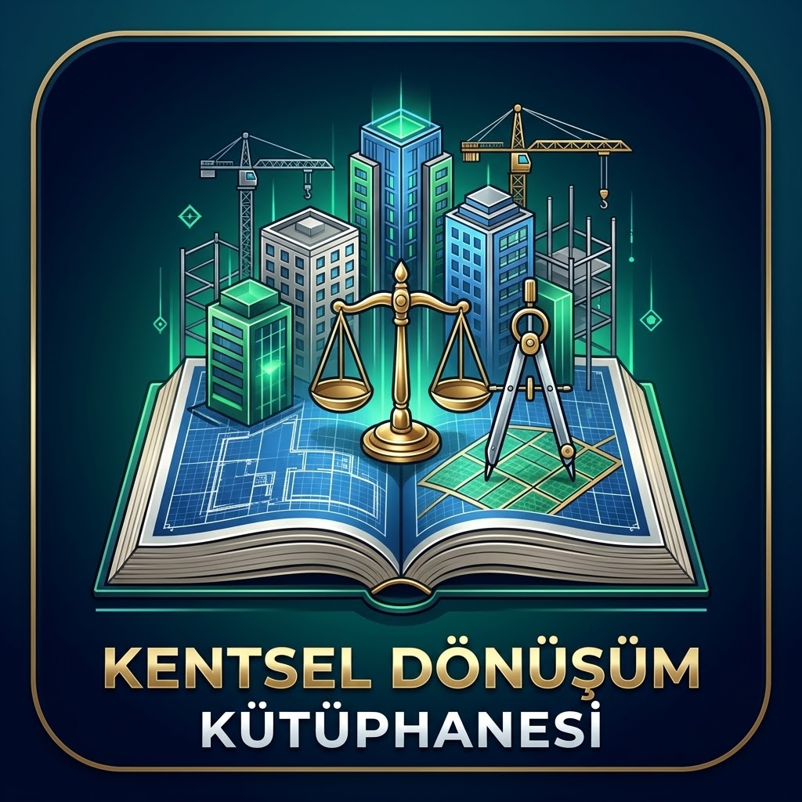

ANA KOMUTA MERKEZİ • CİLT 1 • CİLT 2 • CİLT 3 • CİLT 4
Kentsel Dönüşüm ve İmar Mevzuatı Dijital Kütüphanesi
Belediye e-imar okuma, EK-1d semboller, 1,70 çıkma ve emsal hesapları, 6306 sayılı Kanun (4 Şubat 2026 değişiklikleri), parsel tevhidi (m.15/8), çoklu ruhsatsız yapılar, müteahhit yetki sınıfları (A–H & Y1–Y3), vekaletname/sözleşme şablonları ve 34 Bakanlık görüşünü içeren interaktif saha uygulaması.
📘 CİLT 1 • İMAR PLANI, PAFTA VE MİMARİ HESAPLAR
İmar Planı Okuma, EK-1d Semboller ve Alan Hesaplamaları
- Belediye E-İmar sorgu ekranı okuma ve daire içi semboller (
5 / A-4 / 3) - Mekânsal Planlar Yapım Yönetmeliği EK-1d Gösterimleri ve RGB kodları
- 1,70 Çıkma Katsayısı, +2,50 m Subasman ve Canlı Fizibilite Hesaplayıcı
- Saha Vakaları: Muratpaşa 1291/8 (435 m²) & Kepez Güneş Mah. 27594/1 (16.250 m² İBT, 157 m Mânia &
Ek-1FMalik Krokisi)
📗 CİLT 2 • 6306 KANUN, TEVHİT VE ÇOKLU YAPILAR
6306 Uygulama Süreci, Parsel Tevhidi ve Çoklu Yapılar
- Kentsel dönüşümde 16 Ana Konu, 10 Aşamalı Süreç ve 7269 hasar farkı
- ARAAD başvuru,
Ek-6muhtarlık ilanı (15 gün), itiraz ve yıkım (m.8vsm.17) - 4 Şubat 2026 Yönetmelik Rehberi:
%50+1karar, ruhsat öncesi pay satışı şartı (m.15/4), İki Riskli Parselin Tevhidi (m.15/8) ve aktarım (m.15/10) - Çoklu Ruhsatsız Yapılar Karar Ağacı (
m.15/6-7), idari fesih ve davalar
📙 CİLT 3 • DOSYALAMA, MÜTEAHHİT VE SÖZLEŞMELER
Dosya Sistemi, Müteahhit Sınıfları ve Vekaletname
- 9 Aşamalı Klasör Sistemi ve interaktif
A1–H5Evrak Kontrol Listesi - Yapı Müteahhitliği Sınıfları (
GeçiciveH–AGrupları) & Yıkım (Y1–Y3) - Sınırlı Vekaletname Matrisi vs. Noter Düzenleme Şeklinde Vekaletname (
Ek-3L) - Kat Karşılığı Yer Gösterme Belgesi (
%4 + KDV-Ek-3K) ve 12 Şablon
⚖️ CİLT 4 • MEVZUAT MERKEZİ VE 34 BAKANLIK GÖRÜŞÜ
Mevzuat, Antalya İmar Yönetmeliği ve Bakanlık Görüşleri
- Doğrulanmış Canlı Mevzuat Portalı (
39787,31301,24408,4883,16849) - 6306 Uygulama Yönetmeliği (Madde 1–22) ve 2026 Danıştay YD/İptal Kararları
- Antalya Büyükşehir Belediyesi İmar Yönetmeliği (Madde 1–59 Saha Rehberi)
- Bakanlık Açıklamalı 34 Soru-Cevap Rehberi: Balkon, SGK borcunda kısmi iskân (
m.28/10), otopark, sığınak, tiny house, sundurma ve bağ evi (75/150/250 m²)
📋 Resmi Tutanak, İlan ve Bildirim Formları Hızlı Erişim Masası (Ek-1 – Ek-13)
Aşağıdaki yeşil form rozetlerinden herhangi birine tıklayarak resmi matbu şablonu sağ ikiz ekranda açabilir ve tek tıkla kopyalayabilirsiniz:
Lisans & Teknik: Ek-1 • Ek-2 • Ek-3 • Ek-4 |
Satın Alma/Trampa: Ek-5 |
Riskli Yapı Askı (15 Gün): Ek-6 |
Tahliye/Yıkım (90 Gün): Ek-7/A • Ek-7/B |
Katılmayanlara Teklif (15 Gün): Ek-8 • Ek-10 |
Açık Artırma Satış: Ek-9 • Ek-11 |
Toplantı Çağrısı (15 Gün): Ek-12 |
3. Şahıslara Satış (%10 Teminat): Ek-13